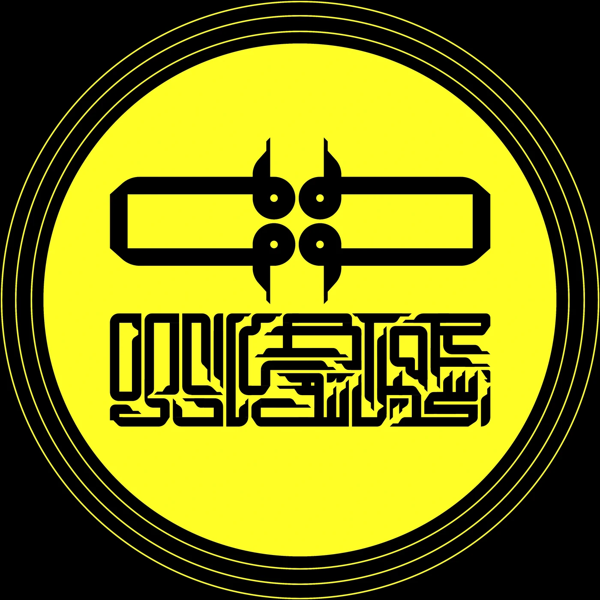

One artist at a time
Artists
The label
We are Oscillator
An independent techno label founded by KEYV, putting one artist forward at a time. Sessions go out numbered and stay up — the catalogue is kept whole, oldest as long as newest.
Sound and artwork are made together and released together. The sleeve is the other half of the mix, not a wrapper for it.
- Sessions
- —
- Latest
- —
- Based in
- Tehran
- Founded by
- KEYV

Demos, bookings, press
Get in touch
We listen to everything that comes in. Send a private link with a line about who you are — no attachments, no zip files.